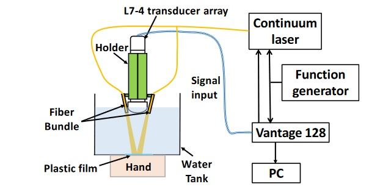
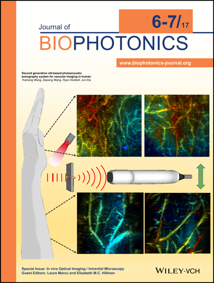

$450,000 Susan G. Komen® Research Grant Awarded To UB
2017
Country 106.5 WYRK Radio
Jun Xia, Ph.D., an Assistant Professor in UB’s Biomedical Engineering Department, will use the $450,000 grant to develop a new screening technology for women with dense breast tissue. This non-invasive imaging technique, called photoacoustic tomography, combines light and ultrasound technology. It has the potential to better identify breast cancer and address an unmet clinical need in these patients. The grant is part of $30.7 million for 98 research grants Komen is distributing across the country in the coming year, with a focus on new treatments and understanding of the most lethal forms and stages of breast cancer. Komen funding to institutions in 27 states and 7 countries also includes research into new screening technologies, treatments for metastatic and aggressive types of breast cancer and disparities in breast cancer outcomes.
Read more...Case Study: Photoacoustic Imaging of Hand Vasculature Using the Verasonics Vantage System
2017
Verasonics
Invited by Verasonics, Dr. Xia wrote a case study about how to use the Vantage system for photoacoustic imaging.
Experimental procedure:
1. Setup connections between Vantage 128 and Continuum laser
• Connect the laser, function generator, and the Vantage 128 according to the following diagram
• The function generator will output 10 Hz TTL as the master clock.
• Both the laser flashlamp and Vantage 128 will be triggered by the falling edge of TTL signal(SeqControl(11).condition ='Trigger_1_ Falling';).
Read more...Selected Cover Picture: 2nd Generation Slit-based PAT for Vascular Imaging in Human
2017
Journal of Biophotonics
Slit-based photoacoustic tomography is a newly developed technique that improves the elevation numerical aperture of a linear array through acoustic diffraction. The slit, placed at the acoustic focus of a linear array, effectively forms an array of virtual detectors with high receiving angle, which subsequently improves the elevation resolution. However, due to the complex implementation, our
Read more...New laser Diodes Promise Compact Photoacoustic Platforms

2017
Optics.org
An international group led by Jun Xia of the University at Buffalo has now demonstrated a possible route to overcoming these hurdles and assisting the technique's clinical acceptance, through the use of a compact and high-power laser in photoacoustic computed tomography (PACT). The technique was applied to the in vivo study of mice and human tissues, in work published
Read more...Veggie Juice that Illuminates the Gut

2016
EurekAlert
BUFFALO, N.Y. -- The pigment that gives spinach and other plants their verdant color may improve doctors' ability to examine the human gastrointestinal tract. That's according to a study, published today (July 11, 2016) in the journal Advanced Materials, which describes how chlorophyll-based nanoparticles suspended in liquid are an effective imaging agent for the gut.
Read more...Photoacoustics Enables High-res Functional Connectivity Imaging of the Mouse Brain

2014
BioOptics World
Using optical excitation and acoustic detection, Washington University researches have developed a functional connectivity photoacoustic tomography (fcPAT) system, which, for the first time, allows noninvasive imaging of resting-state functional connectivity (RSFC) in the mouse brain, with a large field of view and a high spatial resolution. Research associate Mohammad Avanaki, Ph.D., describes RSFC as one of the most exciting discoveries in neuroimaging: It aims to identify low-frequency, spontaneous cerebral hemodynamic fluctuations, which are highly correlated with the local neuronal activity.
Read more...Imaging Technology in Mice Enhances Human Brain Research

2014
SPIE Newsroom
One of many approaches to studying neurological function involves imaging the brain's functional connectivity, an observational analysis of neuronal activity in different parts of the brain. Recent research suggests that fluctuations in the activity of separate groups of neurons are interactively correlated, although they do not affect one another's activity directly. Resting-state functional connectivity (RSFC) imaging is one technique that is emerging to identify low-frequency, spontaneous cerebral fluctuations in hemodynamics—such as blood oxygenation and total hemoglobin concentration—that are associated with these functional connections. A hallmark of functional organization in the brain's cortex is
Read more...Going with the Flow

2013
Physics Synopsis
Measuring local blood flow inside living creatures provides insight into both normal functions and diseases. Ultrasound can probe deep within tissues by using the Doppler shift of the sound waves’ frequency to detect the motion of blood cells. But this effect is unmeasurable for blood moving slower than about ten millimeters per second. In Physical Review Letters, Lidai Wang and his colleagues at Washington University, Missouri, demonstrate that ultrasonic waves can instead be used to heat a small volume of blood, thereby “tagging” it. The motion of this tagged blood is then tracked by a light-based technique. In a test setup, they measured speeds as low as a quarter of a millimeter per second.
Read more..Thermal Technique Improves Blood-flow Measurements

2013
Physics World
A new method for imaging the flow of blood has been developed by researchers in the US. By using ultrasound to thermally tag blood, along with photoacoustics to image the resulting heat flow, the new technique is considerably more sensitive than the conventional Doppler ultrasound method that is currently used. While presently at the in vitro testing stage, this technique might have a variety of clinical applications, especially in medical diagnosis. Being able to image the flow of blood within deep tissue would provide valuable information for the diagnosis and understanding of many diseases, with potential applications including functional brain imaging, detection of vascular diseases
Read more...ScienceShot: A Window Into Your Veins

2013
Science
Now there’s a better way to spy on the blood in your veins. Doctors already have two techniques to monitor obstructions in blood vessels, but they both have limitations. The first, Doppler ultrasound imaging, involves irradiating tissue with ultrasound waves; the waves that reflect off flowing blood acquire a Doppler shift, which can be used to pick out blood and calculate its speed. Doppler can't distinguish flowing blood from surrounding tissue unless it's moving quickly, however, which makes minor blood vessels invisible. The second technique, photoacoustic imaging, uses an
Read more...Noninvasive Photoacoustic Computed Tomography of Mouse Brain Metabolism In Vivo

2013
F1000Prime
Optical imaging is beginning to come to age. It has long held great promise as a tool for interrogating surface tissues because of the flexibility in selection of fluorophores. While some information has long been available with the use of a signal from intrinsic contrast with hemoglobin or cytochromes, applications have been limited either to those demanding
Read more...